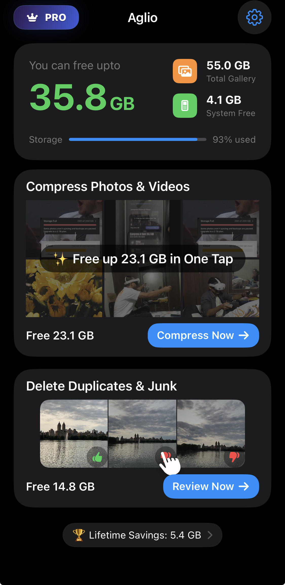
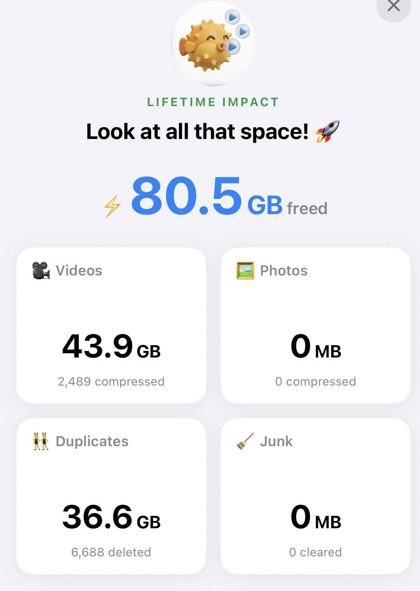
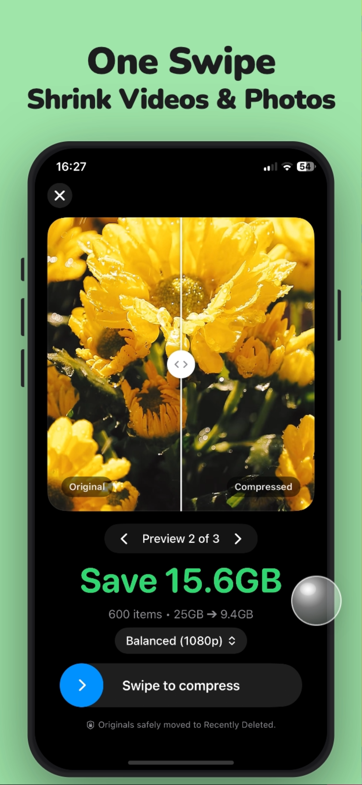
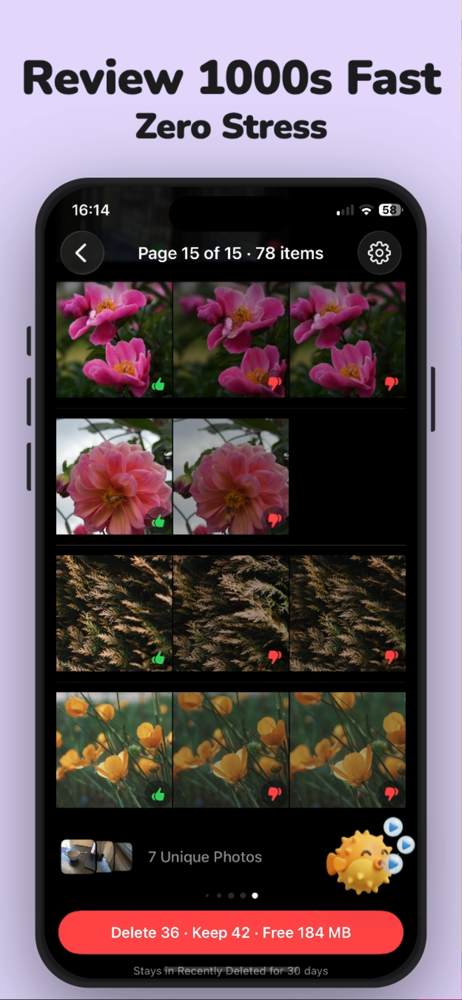
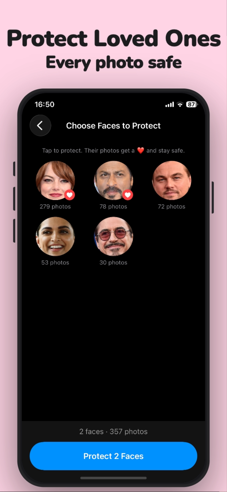
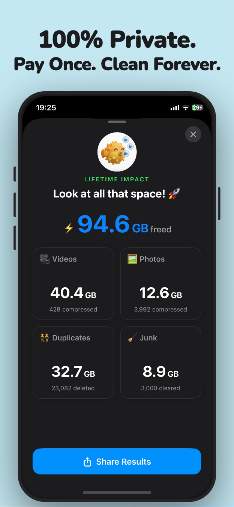

See the wins first.
Private photo cleaner for iPhone
iPhone storage cleaner that saves space without deleting memories.
Bulk compress iPhone videos, review duplicate and similar photos fast, and keep fresh memories out of the cleanup path.

The whole story in one screen.
See savings, one-tap compression, and duplicate cleanup at a glance.
Early customer proof
Early customers have saved up to 80.5 GB.
80.5GB freed
Compression plus duplicate cleanup can create serious space without wiping the moments you still care about.

What it feels like

Compress in one swipe.

Review 1000s fast.

Protect loved ones.

Private, on-device.
Protect loved ones
Select the people that matter most to you. Once protected, all of their images stay safe and none of them are ever marked for deletion by Aglio.
From App Store reviews
Short, sharp, and real.
★★★★★
“Works flawlessly.”
Tanmaymun · App Store review
★★★★★
“Saved 10 GB in 30 mins.”
Amit93maurya · App Store review
★★★★★
“Smart enough to not mix different people.”
#FrustratedALot · App Store review
Source: Apple App Store reviews
Read before you pay for more storage
Migrated photos and old chat media can quietly waste iPhone storage
Learn why imported JPEG and H.264 files can still take more space than modern iPhone-friendly formats.
Apple support sources included
Read guide
Before you pay for more storage, audit what you are actually keeping
A practical piece on Google Photos limits, screenshot clutter, duplicate cleanup, and whether cloud rent is even necessary yet.
Official tools and options linked
Read guide
Why I built Aglio instead of paying cloud rent forever
A founder article on frugal storage, lifetime pricing, on-device privacy, and why the hard part is reliable review flow, not just compression.
Problem-space references included
Read guide
Common questions
Does Aglio replace iCloud or Google Photos?
No. Aglio helps reduce clutter in your everyday iPhone library before you decide whether you need to pay for a larger backup tier.
Can Aglio help with duplicate and similar photos?
Yes. Aglio is built for fast review of duplicate and similar images so cleanup feels manageable instead of overwhelming.
Is Aglio private?
Yes. The product is designed so your media stays on-device during cleanup, which matters when your gallery contains personal memories.